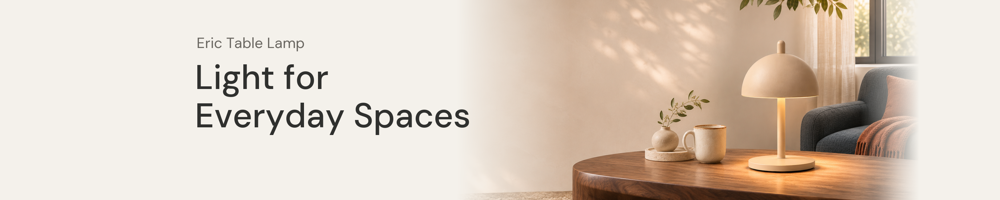
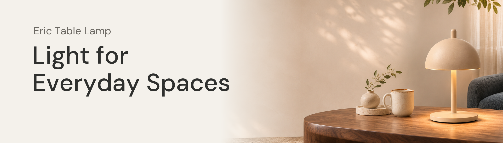
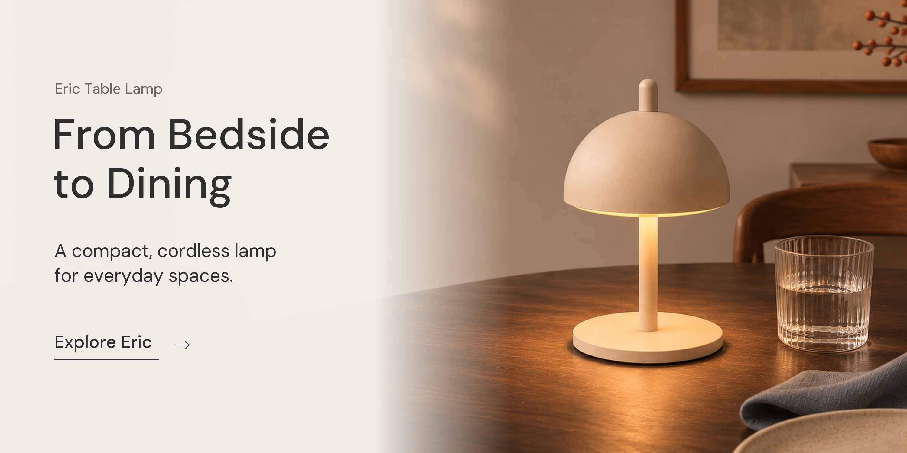
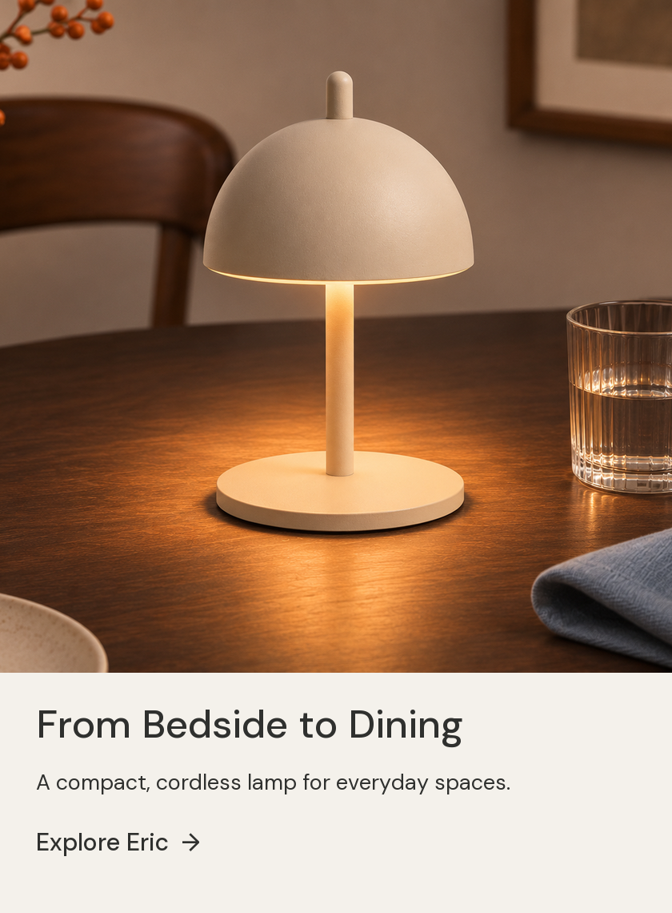
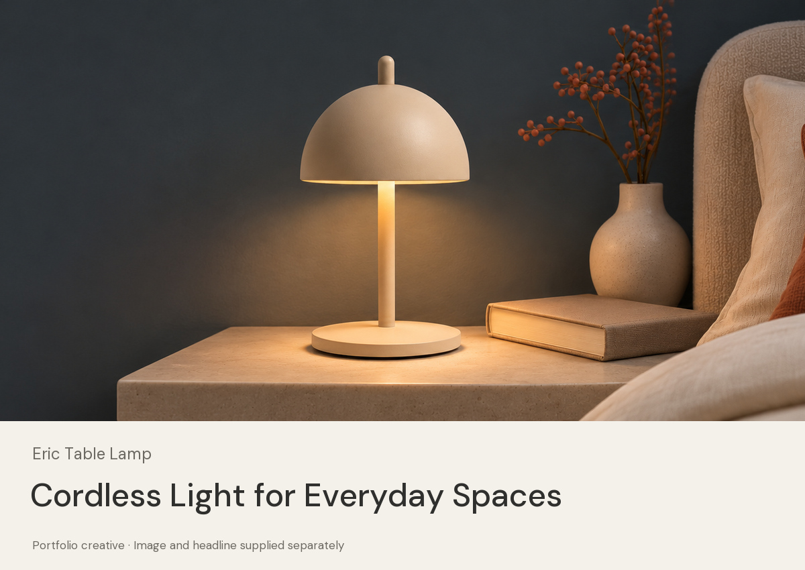

01 / 店铺页头

查看中央 70% 裁切检查

02 / 店内场景导流

标题：From Bedside to Dining
正文：A compact, cordless lamp for everyday spaces.
链接文字：Explore Eric。真实商品目的地址尚未填写。
查看手机图文适配示意

03 / REC 广告

上图为独立图片与标题字段的展示示意。实际图片素材不含标题、Logo 或 CTA。
可编辑源稿为 SVG，文字可编辑；未提供 PSD 或分层 Photoshop 文字文件。图片素材目录包含规划中的 6 份比例资产。详见 README.md。